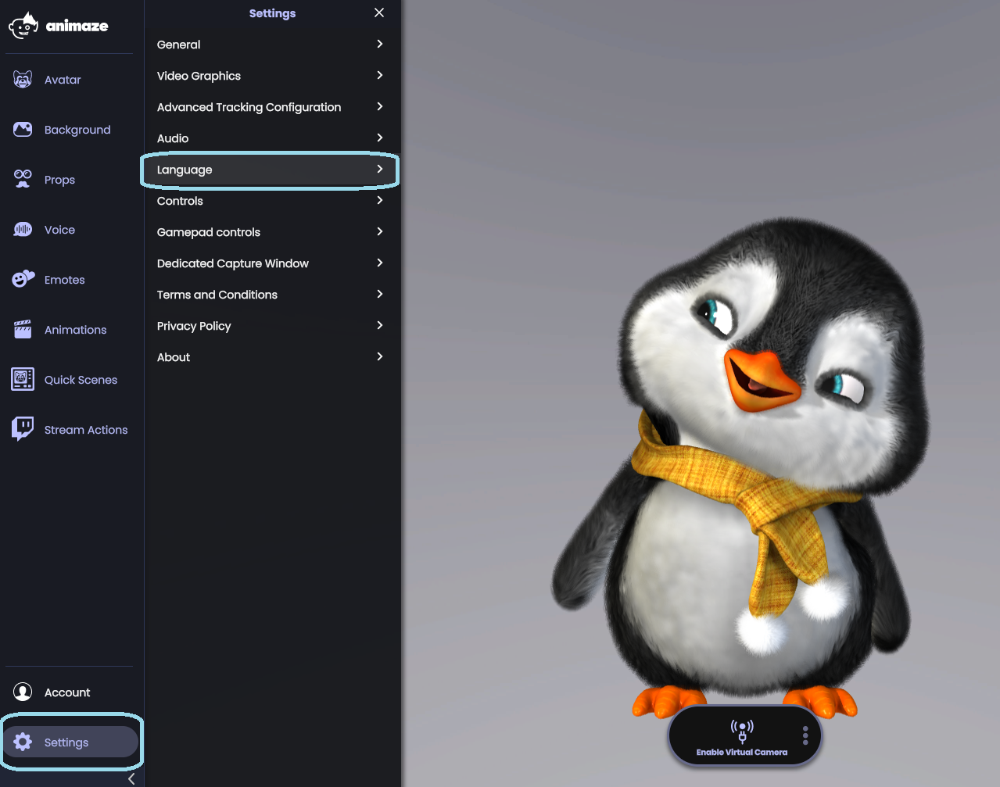
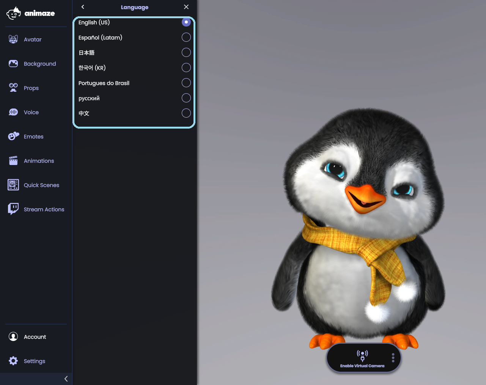

Animaze Desktop: What languages does Animaze support and how can I change it?
At the moment, you can use the Animaze app in 7 different languages: English, Japanese, Brazilian Portuguese, Russian, Chinese, Korean, and Spanish (LATAM). If you would like to include another language, let us know at support [@] animaze.us and we will see what we can do!
Navigating between languages can easily be done by following these steps:
First of all, go to the left-handed menu and click on the Settings button. From here, select the Language menu:

This will prompt the list of languages you can choose from

Check in the language you want to use in the Animaze app. The setting will come into effect after you restart the app.